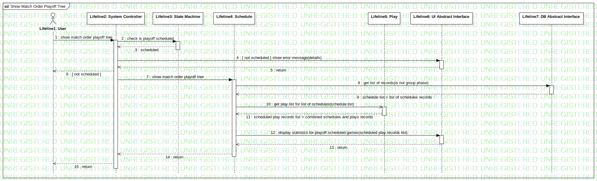

Interaction1
UMLInteraction
Untitled
::
Model1
::
Collaboration11
::
Interaction1
Description
none
Diagrams

Show Match Order Playoff Tree
Participants
Lifeline1: User
Lifeline2: System Controller
Lifeline3: State Machine
Lifeline4: Schedule
Lifeline5: Play
Lifeline6: UI Abstract Interface
Lifeline7: DB Abstract Interface
Messages
show match order playoff tree (Lifeline1→Lifeline2)
check is playoff scheduled (Lifeline2→Lifeline3)
scheduled (Lifeline3→Lifeline2)
[ not scheduled ] show error message (Lifeline2→Lifeline6)
return (Lifeline6→Lifeline2)
[ not scheduled ] (Lifeline2→Lifeline1)
show match order playoff tree (Lifeline2→Lifeline4)
get list of records (Lifeline4→Lifeline7)
list of schedules records (Lifeline7→Lifeline4)
get play list for list of schedules (Lifeline4→Lifeline5)
combined schedules and plays records (Lifeline5→Lifeline4)
display statistics for playoff scheduled games (Lifeline4→Lifeline6)
return (Lifeline6→Lifeline4)
return (Lifeline4→Lifeline2)
return (Lifeline2→Lifeline1)
Properties
Name
Value
name
Interaction1
stereotype
null
visibility
public
isReentrant
true
Owned Elements
Show Match Order Playoff Tree